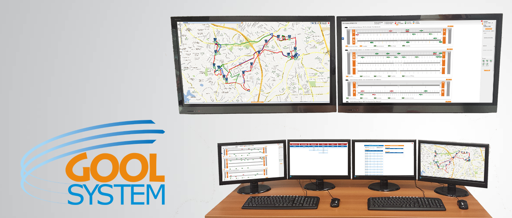
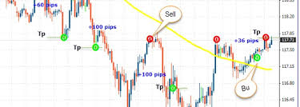
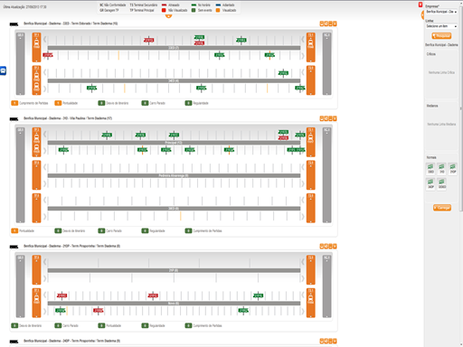

Gool System
O GOOL System, ou Gerenciamento da Operação On Line, proporciona o gerenciamento da operação
de uma empresa de transporte de passageiros com possibilidade de intervenção em tempo real,
pois permite comunicação direta e imediata com os motoristas em trânsito. O total controle
da frota é garantido, o que diminui os riscos de perdas de viagens e controle das informações
da operação no campo (veículos em viagens etc). O sistema também
emite relatórios para contra argumentação jurídica.
Como o sistema é via web, a operação ganha em muitos pontos,
principalmente porque os clientes acessam dados de sua operação em tempo real,
de qualquer lugar do mundo. A integração é simples e fácil a outros sistemas de
gestão empresarial (ERP), de planejamento de quadros de horários, além de ter a
possibilidade de se integrar a soluções que envolvem itinerários on-line e bilhetagem eletrônica.

Tecnologia que reduz custos e aumenta a eficiência no transporte
Desenvolvido para o serviço de transporte coletivo, é uma solução que atende
aos serviços de ônibus urbanos e fretamento. Gerencia e monitora, em tempo real
e pela Internet, toda a frota em operação, possibilitando à empresa operadora
prestar um serviço de melhor qualidade e, principalmente, muito mais eficiente.
A inteligência da solução permite uma visão completa e fácil da frota.
Os resultados de melhoria nos processos de planejamento e operação, de redução de custos
e de maior eficiência na prestação de serviço são facilmente percebidos.
Você planeja sua operação e o Gool System a apresenta em tempo real,
além de fornecer alertas e relatórios das exceções que aparecerem.
Isso possibilita ações (intervenções on-line), visando adequar a operação ao planejamento.
Conheça o Gool System, a forma mais inovadora de controlar a sua frota.
Mapa Sinótico

Permite que os controladores acompanhem de forma gráfica e on-line a operação
de toda frota por linha, informando a posição de cada veículo, se o mesmo está
no horário programado, a distância em minutos para o carro da frente, o tempo que
falta para chegada ao terminal e a velocidade desenvolvida,
possibilitando ainda a intervenção do controlador na operação.

MAPEAMENTO:Acompanhamento on-line da operação da linha, através de mapas na web.
PAINEL DE ALERTA: Recurso exclusivo que permite ao Centro de Controle Operacional (CCO)
o gerenciamento em tempo real de eventos que se configurem como exceções às regras
e aos padrões definidos para a operação, tais como atrasos e adiantamentos,
cumprimento de partidas, falta de regularidade, desvio de itinerários,
veículos em comboio, excesso de velocidade, entre outros.
MULTIRROTAS: Sofisticada função que permite o gerenciamento e controle em
tempo real de linhas que realizem mais de um itinerário no mesmo dia.
HEADWAY: Gerenciamento e controle inteligente do distanciamento entre veículos.
REPLAY: Reprodução no mapa do histórico da movimentação do veículo em um determinado período.
TERMINAIS DE DADOS: Função que permite a comunicação direta e imediata do
condutor do veículo com os controladores no CCO, agilizando a intervenção na operação.
Exige aquisição de equipamento específico.
GOOL MÓVEL: Informações da operação (previsão de chegada, dados sobre o operador,
indicadores de desempenho, etc.) através de dispositivos móveis com acesso à web.
RELATÓRIOS GERENCIAIS: Para acompanhamento e planejamento operacional da frota,
a partir de indicadores (pontualidade, regularidade, tempo de viagem, cumprimento de partidas etc.),
além de informações detalhadas sobre todas as viagens, como horários, operadores, saída da garagem
e chegada à mesma, tempo de presença nos pontos, entre outros.
Implantação
A implantação do Gool System demanda pouco investimento em infraestrutura de TI,
como servidores, equipamentos de backup, softwares de banco de dados, geradores de energia,
no-breaks, além de rotinas de segurança de dados. Isto porque o sistema foi desenvolvido no
conceito de software como serviço (SaaS), onde toda a infraestrutura de tecnologia está embutida
na prestação dos serviços. Para montagem do Centro de Controle Operacional ? CCO,
são suficientes apenas estações de trabalho com acesso à Internet. A quantidade de estações
é proporcional à frota a ser monitorada. Durante a implantação é realizado o treinamento
da equipe do cliente, configuração do sistema para ajustá-lo à realidade da empresa e
suporte ao cadastramento de todas as informações necessárias ao gerenciamento da frota,
além de um acompanhamento inicial do uso do sistema, chamado de Operação Assistida.
Benefícios
Para a Operadora de Transportes Menor custo operacional
- Melhor rendimento de combustível;
- Redução das equipes de operação no campo;
- Menor desgaste na operação do veículo;
- Redução de custos com infrações de trânsito e acidentes.
Maior controle da operação
- Acompanhamento e intervenção na operação em tempo real;
- Diminuição dos riscos de perda de viagens;
- Comunicação direta com os operadores nos veículos;
- Acesso on-line às informações da operação no campo.
Melhor planejamento
- Facilidade na análise dos quadros de horário e escalas de serviço;
- Acesso on-line a indicadores de desempenho da operação;
- Maior apoio na análise da operação junto ao órgão gestor.
Melhor serviço
- Mais pontualidade, regularidade e segurança;
- Rapidez na informação ao usuário.
Para o usuário do Sistema de Transportes
- Um serviço mais pontual e regular;
- Mais conforto, comodidade e segurança;
- Informação com mais rapidez;
- Maior mobilidade.
Integrações
O Gool System é facilmente integrado a diversos outros sistemas já utilizados pelas empresas,
a exemplo de sistemas de Gestão Empresarial (ERP) e Planejamento de Quadros de Horários.
Há também a possibilidade de integração com softwares especialistas, tais como itinerários
on-line e bilhetagem eletrônica, entre outros. ERP da empresa cliente, utilizando cadastros como:
- Programação de horários;
- Funcionários;
- Veículos;
- Escalas;
- Ordem de serviço da manutenção;
- Veículos retidos.
Bilhetagem Eletrônica, utilizando o validador do veículo, proporcionando vantagens como:
- Informações sobre a demanda em tempo real;
- Quantidade de passageiros entre cada parada
- Facilidade no planejamento das linhas por horário
Com equipamentos:
- Quanta Tecnologia: Rastreamento + Terminal de dados
- Prodata : Validador + Terminal de dados
- Spider: PMV, Painéis de Mensagens Variáveis
- Empresa 1: Validador + Terminal de Dados
Diferenciais
- Facilidade na implantação, já que não exige grande investimento em infraestrutura de TI;
- Capacitação, através de treinamento dos profissionais que atuarão diretamente no sistema;
- Operação assistida. Acompanhamento de toda a implantação e adaptação do sistema;
- Facilidade na operação, pois funciona com plataforma 100% web, permitindo o acesso ao
sistema de qualquer local e a qualquer hora;
- Integração com outros sistemas já utilizados pela empresa e com softwares especializados,
tais como itinerários on-line e bilhetagem eletrônica, entre outros;
- Aderência do sistema às regras do transporte de passageiros;
- Permanente aperfeiçoamento, atualização e ampliação das funcionalidades.